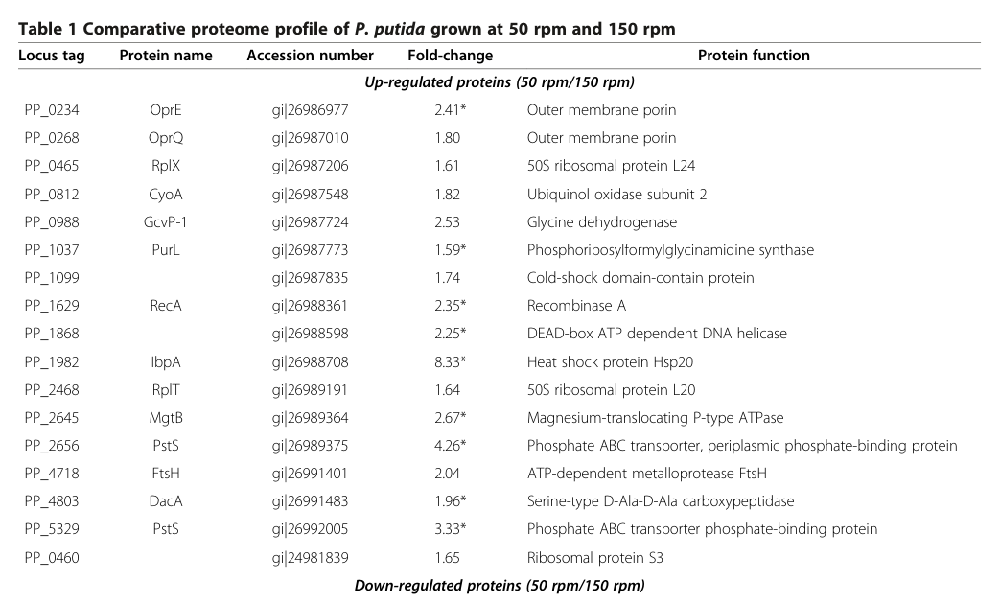

RecA is the central bacterial recombinase and the master regulator of the SOS DNA damage response. It binds single-stranded DNA and assembles into a right-handed helical nucleoprotein filament that, in an ATP-dependent manner, searches homologous duplex DNA and catalyzes DNA pairing and strand exchange (synapsis). This activity underpins homologous recombination, recombinational repair of double-strand breaks, and the rescue of stalled or collapsed replication forks. The activated filament (RecA*) also acts as a co-protease platform that stimulates autocatalytic self-cleavage of the LexA repressor, thereby derepressing the SOS regulon and inducing DNA repair and damage-tolerance genes. RecA hydrolyzes ATP in the presence of single-stranded DNA, which drives filament dynamics and strand exchange. In Pseudomonas putida KT2440 the protein acts in the cytoplasm on DNA; the activated RecA filament is competent to cleave the principal SOS repressor LexA1, and the gene contributes to survival of DNA-damaging and other stresses.
| GO Term | Evidence | Action | Reason |
|---|---|---|---|
|
GO:0003677
DNA binding
|
IEA
GO_REF:0000002 |
KEEP AS NON CORE |
Summary: RecA binds DNA as an intrinsic part of its recombinase function.
Reason: Correct but general. RecA's biologically meaningful binding activities are single-stranded DNA binding (GO:0003697) and damaged DNA binding (GO:0003684), which are separately annotated and capture the core function more precisely. Retained as a true but non-core parent term.
|
|
GO:0003684
damaged DNA binding
|
IEA
GO_REF:0000104 |
ACCEPT |
Summary: RecA recognizes and binds ssDNA generated at damaged/stalled DNA sites, a key step in recombinational repair and SOS activation.
Reason: Consistent with RecA's role in sensing DNA damage substrates and forming the activated nucleoprotein filament. Well supported by family-level conservation and UniRule transfer.
|
|
GO:0003697
single-stranded DNA binding
|
IEA
GO_REF:0000120 |
ACCEPT |
Summary: RecA nucleates and binds single-stranded DNA to form the helical nucleoprotein filament that performs homology search and strand exchange.
Reason: Core molecular function of RecA, strongly conserved across the RecA family and consistent with the UniProt FUNCTION annotation.
|
|
GO:0005524
ATP binding
|
IEA
GO_REF:0000120 |
ACCEPT |
Summary: RecA contains a P-loop (Walker A motif, residues 65-72) and binds ATP, which is required for active filament formation and strand exchange.
Reason: Directly supported by the conserved P-loop NTPase / AAA+ domain and the annotated ATP binding site in the UniProt record.
|
|
GO:0005737
cytoplasm
|
IEA
GO_REF:0000120 |
ACCEPT |
Summary: RecA acts in the cytoplasm on chromosomal DNA.
Reason: Consistent with the UniProt subcellular location (Cytoplasm) and the nature of RecA as a soluble DNA-acting protein. Cytosol (GO:0005829) is the more specific term.
|
|
GO:0005829
cytosol
|
IEA
GO_REF:0000118 |
ACCEPT |
Summary: RecA is a soluble cytosolic protein that assembles on DNA.
Reason: Appropriate, more specific localization consistent with the cytoplasmic location and PANTHER tree-based transfer.
|
|
GO:0006259
DNA metabolic process
|
IEA
GO_REF:0000002 |
KEEP AS NON CORE |
Summary: RecA participates in DNA metabolism through recombination and repair.
Reason: Correct but very general; the specific processes (DNA recombination, DNA repair, SOS response) are separately annotated and better represent the gene's function. Retained as a true parent term.
|
|
GO:0006281
DNA repair
|
IEA
GO_REF:0000120 |
ACCEPT |
Summary: RecA-mediated homologous recombination repairs double-strand breaks and stalled replication forks; recA mutants are hypersensitive to DNA-damaging agents.
Reason: Core biological role, supported by conservation and consistent with P. putida phenotypes (recA mutants hypersensitive to formaldehyde-induced DNA damage).
|
|
GO:0006310
DNA recombination
|
IEA
GO_REF:0000104 |
ACCEPT |
Summary: RecA is the central recombinase catalyzing homology search and DNA strand exchange in homologous recombination.
Reason: Defining core function of RecA, conserved across bacteria and consistent with the UniProt FUNCTION (ATP-dependent uptake/hybridization of homologous ssDNA).
|
|
GO:0006974
DNA damage response
|
IEA
GO_REF:0000104 |
ACCEPT |
Summary: RecA senses DNA damage (via ssDNA) and triggers the SOS response, the core cellular DNA damage response in bacteria.
Reason: Correct and central to RecA function; the more specific SOS response (GO:0009432) is also annotated.
|
|
GO:0008094
ATP-dependent activity, acting on DNA
|
IEA
GO_REF:0000120 |
ACCEPT |
Summary: RecA couples ATP binding and hydrolysis to its action on DNA during filament dynamics and strand exchange.
Reason: Accurately captures the ATP-driven, DNA-acting motor-like activity of RecA, consistent with the UniProt FUNCTION (ATP hydrolysis in the presence of ssDNA).
|
|
GO:0009432
SOS response
|
IEA
GO_REF:0000104 |
ACCEPT |
Summary: Activated RecA (RecA*) promotes LexA autocleavage, derepressing the SOS regulon. In P. putida KT2440 RecA* fully cleaves the main repressor LexA1.
Reason: Core function strongly supported by both conservation and direct organism-specific evidence that P. putida RecA* cleaves LexA1 (Akkaya et al. 2021).
|
|
GO:0140664
ATP-dependent DNA damage sensor activity
|
IEA
GO_REF:0000002 |
ACCEPT |
Summary: RecA acts as an ATP-dependent sensor of DNA damage by forming the activated ssDNA-bound filament that initiates the SOS response.
Reason: Appropriate molecular-function term for RecA's role as the SOS damage sensor that triggers LexA co-protease activity; consistent with InterPro mapping and RecA biology.
|
The research report should be a detailed narrative explaining the function, biological processes, and localization of the gene product. Citations should be given for all claims.
You should prioritize authoritative reviews and primary scientific literature when conducting research. You can supplement
this with annotations you find in gene/protein databases, but these can be outdated or inaccurate.
We are specifically interested in the primary function of the gene - for enzymes, what reaction is catalyzed, and what is the substrate specificity? For transporters, what is the substrate? For structural proteins or adapters, what is the broader structural role? For signaling molecules, what is the role in the pathway.
We are interested in where in or outside the cell the gene product carries out its function.
We are also interested in the signaling or biochemical pathways in which the gene functions. We are less interested in broad pleiotropic effects, except where these elucidate the precise role.
Include evidence where possible. We are interested in both experimental evidence as well as inference from structure, evolution, or bioinformatic analysis. Precise studies should be prioritized over high-throughput, where available.
The requested target corresponds to the canonical bacterial homologous recombination protein RecA encoded by recA at locus PP_1629 in Pseudomonas putida KT2440, consistent with the UniProt entry Q88ME4 provided by the user. In P. putida KT2440, recA (PP_1629) is listed among transcriptional units regulated by the E. coli–like SOS repressor LexA1 (supporting that the gene is the classic SOS/repair recA, not an unrelated gene symbol collision). (abella2007cohabitationoftwo pages 4-4)
RecA is widely conserved in bacteria and acts as the core recombinase that: (i) binds single-stranded DNA (ssDNA), (ii) forms a right-handed helical nucleoprotein filament, (iii) performs a homology search on duplex DNA, and (iv) catalyzes DNA pairing and strand exchange (synapsis). These steps constitute the fundamental biochemical definition of RecA-dependent HR and underpin double-strand break repair, recovery of stalled replication forks, and repair of postreplication gaps. (cox2023generationandrepair pages 20-22, carrasco2024processingofstalled pages 9-10)
RecA filament formation proceeds through nucleation and extension phases, nucleates preferentially on ssDNA, and filament growth is directionally biased (noted as 5′→3′ extension in a recent MMBR review). RecA-mediated strand exchange is coupled to ATP hydrolysis and described as motor-like; a representative in vitro strand-exchange rate reported for E. coli RecA is ~360 bp/min at 37°C (useful as an order-of-magnitude benchmark for bacterial RecA kinetics). (cox2023generationandrepair pages 20-22)
In canonical bacterial SOS regulation, DNA damage yields ssDNA substrates that support formation of the activated RecA nucleoprotein filament (often denoted RecA). RecA then serves as a scaffold that promotes LexA autocatalytic self-cleavage, de-repressing the SOS regulon. This RecA–LexA axis is emphasized as conserved in recent reviews of replication stress and bacterial DNA damage responses. (carrasco2024processingofstalled pages 9-10)
A P. putida KT2440/EM173-focused study directly addresses RecA/LexA function and reports that activated RecA from P. putida (RecAPP) is capable of fully cleaving the LexA1 repressor (“RecAPP does cleave entirely LexA1”), demonstrating that the protein can execute the key SOS-activation step at the mechanistic level. (akkaya2021thefaultysos pages 9-10, akkaya2021thefaultysos pages 7-9)
Despite RecAPP being capable of LexA1 cleavage, P. putida KT2440/EM173 is reported to mount a weak (“faulty/mediocre”) SOS response compared with E. coli. The authors attribute this to an “inefficacy of the crucial RecA–LexA interplay,” emphasizing promoter/repression architecture: basal expression of recA and lexA1 is high even without DNA damage* and induction by norfloxacin is only moderate. (akkaya2021thefaultysos pages 1-2, akkaya2021thefaultysos pages 7-9)
At the quantitative level, promoter fusion experiments show species-dependent promoter strengths and cross-compatibility asymmetries: in P. putida, an E. coli PrecA fusion yields higher fluorescence than the native P. putida PrecA, while an E. coli PlexA fusion is much weaker than P. putida PlexA1. Cross-complementation indicates RecA_EC poorly induces cleavage/response via LexA1_PP, whereas RecA_PP supports stronger proteolysis of LexA_EC, suggesting a non-symmetric RecA–LexA compatibility. (akkaya2021thefaultysos pages 5-7)
The same KT2440/EM173 study also reports that P. putida carries two lexA variants; LexA1 is the main SOS regulator partnered with RecA for the general SOS response, while LexA2 appears specialized and controls a mutagenesis-associated unit including imuA/imuB/dnaE2. (akkaya2021thefaultysos pages 2-3)
RecA is not a secreted or membrane protein; functionally it operates in the cytosol on DNA by assembling on ssDNA to form nucleoprotein filaments. Recent reviews emphasize that RecA forms stimulus-dependent foci that can develop into dynamic filaments/threads and can colocalize with replisome components under some conditions (evidence described in B. subtilis but framed as general bacterial RecA behavior). (carrasco2024processingofstalled pages 9-10)
Proteomics of P. putida KT2440 grown under filament-inducing conditions (low shaking, 50 rpm) shows increased abundance of RecA (PP_1629) by 2.35-fold relative to non-filament-inducing conditions (150 rpm). (crabbe2012differentialproteomicsand pages 2-5, crabbe2012differentialproteomicsand media 5d0c0d05)
In the same work, filament-inducing growth is associated with higher stress tolerance: 12.5-fold greater heat-shock resistance and 2.1-fold greater saline resistance in 50 rpm cultures compared with 150 rpm cultures, and the increased heat-shock resistance phenotype (55°C for 30 min) is reported as RecA-dependent, while filamentation itself is RecA-independent. (crabbe2012differentialproteomicsand pages 1-2, crabbe2012differentialproteomicsand pages 2-5, crabbe2012differentialproteomicsand media 40d79d61)
In P. putida KT2440, formaldehyde detoxification experiments show that wild type tolerates up to 1.5 mM formaldehyde, while 10 mM is lethal; a sublethal 0.5 mM decreases growth rate by about 40%. (roca2008physiologicalresponsesof pages 1-3)
Mutants defective in DNA repair genes including recA (PP1629) are hypersensitive to 10 mM formaldehyde: killing rates are reported as 3–4 orders of magnitude higher than the parental strain, and another section describes killing as about ~1000-fold faster than the parental strain. (roca2008physiologicalresponsesof pages 1-3, roca2008physiologicalresponsesof pages 9-10)
A 2024 preprint reports cryo-EM/biophysical characterization of the SOS activation complex in Pseudomonas aeruginosa, revealing how ssDNA/ATP-bound activated RecA filaments (“RecA”) accommodate LexA and position the LexA cleavable loop for self-cleavage. The study reports quantitative binding parameters (apparent dissociation constants): KDapp ~82 ± 34 nM for RecA binding a 32-mer ssDNA, KDapp ~2.0 ± 0.2 µM for ATPγS binding (in the presence of ssDNA), and KDapp ~390 ± 50 nM for LexA CTD binding to activated RecA. Although this is not P. putida, it is genus-relevant and directly informs mechanistic interpretation of RecA–LexA interplay in pseudomonads. (vascon2024snapshotsofpseudomonas pages 9-13)
Recent authoritative reviews highlight RecA’s roles in (i) postreplication gap formation/repair and (ii) processing stalled replication forks, emphasizing mediator/modulator systems that load or regulate RecA filaments and linking RecA filament activity to fork rescue and genome stability. These reviews provide the current consensus framing for functional annotation of RecA homologs in Gram-negative bacteria, including pseudomonads. (cox2023generationandrepair pages 20-22, carrasco2024processingofstalled pages 5-6, carrasco2024processingofstalled pages 9-10)
A 2023 review of bacterial knockout methods describes RecA- and RecBCD-mediated homologous recombination as a conventional route for two-step allelic exchange in Gram-negative bacteria, including suicide-plasmid integration followed by a second recombination event to resolve plasmid backbone and yield an accurate deletion. The same review highlights practical limitations of RecA-dependent workflows (e.g., DNA delivery/uptake constraints; efficiency barriers), motivating alternative approaches. (tong2023reviewofknockout pages 2-4, tong2023reviewofknockout pages 7-9)
A 2023 recombineering review contrasts RecA-dependent HR with phage recombinase systems (e.g., λ-Red/RecET), emphasizing that recombineering can achieve high-efficiency homologous recombination using short homology arms (~50 bp) and simple linear DNA or oligonucleotide substrates—often substantially reducing the experimental burden relative to RecA-dependent allelic exchange. (li2023theemergingrole pages 1-2)
The 2024 P. aeruginosa structural work explicitly positions its RecA–LexA interaction model as groundwork for designing antimicrobial strategies that interfere with SOS induction (a pathway linked to stress adaptation and antibiotic resistance evolution). (vascon2024snapshotsofpseudomonas pages 9-13)
The KT2440/EM173 study argues that a weak/faulty RecA–LexA-controlled SOS response correlates with high DNA-damage sensitivity and low homologous recombination efficiencies, complicating classical genetic engineering; the authors also propose this may stabilize paralog-rich genomes and influence HGT tolerance. (akkaya2021thefaultysos pages 9-10, akkaya2021thefaultysos pages 1-2)
Taken together, the evidence supports annotating P. putida KT2440 RecA (PP_1629; UniProt Q88ME4) as an ATP-dependent DNA strand exchange recombinase that forms helical nucleoprotein filaments on ssDNA to catalyze homology search and homologous recombination, and as a key SOS activator whose activated filament (RecA) promotes LexA1 self-cleavage* to control DNA damage–induced transcriptional programs. (cox2023generationandrepair pages 20-22, carrasco2024processingofstalled pages 9-10, akkaya2021thefaultysos pages 9-10)
A KT2440-specific nuance is that while RecAPP can cleave LexA1, network-level SOS induction is weak due to promoter/repression architecture and an inefficient RecA–LexA interplay. This nuance is important for functional annotation because it affects: (i) expected inducibility of DNA repair/mutagenesis modules, (ii) strain behavior in DNA damage and genome engineering contexts, and (iii) interpretation of RecA as a stress-response hub in P. putida relative to E. coli*. (akkaya2021thefaultysos pages 1-2, akkaya2021thefaultysos pages 5-7, akkaya2021thefaultysos pages 2-3)
The following table summarizes the main conclusions, quantitative data, and most relevant recent papers.
| Topic | Key points | Best supporting citations (with pqac ids) | Primary sources with year + URL |
|---|---|---|---|
| Identity/domains | Target verified as recA / PP_1629 / UniProt Q88ME4 from Pseudomonas putida KT2440, a canonical bacterial RecA-family recombinase. User-provided UniProt/domain context is consistent with conserved RecA architecture: AAA+ ATPase / P-loop NTPase core, RecA DNA recombination-repair domain, and RecA-like C-terminal region. P. putida carries a single canonical recA plus two lexA paralogs, with LexA1 acting as the main SOS partner of RecA. | (akkaya2021thefaultysos pages 2-3, abella2007cohabitationoftwo pages 4-4, sabei2023modelingthehomologous pages 7-9) | Akkaya et al., 2021, Environmental Microbiology, https://doi.org/10.1111/1462-2920.15384; Abella et al., 2007, Journal of Bacteriology, https://doi.org/10.1128/JB.01213-07; Sabei et al., 2023, IJMS, https://doi.org/10.3390/ijms241914896 |
| Molecular function | Conserved RecA function is ATP-dependent homologous recombination: RecA nucleates on ssDNA, forms right-handed nucleoprotein filaments, conducts homology search, and catalyzes DNA strand exchange. ATP hydrolysis powers filament dynamics and strand exchange progression. Filaments assemble preferentially on ssDNA and may extend directionally. RecA also serves as the activated coprotease platform that enables LexA self-cleavage in SOS signaling. | (cox2023generationandrepair pages 20-22, carrasco2024processingofstalled pages 9-10, mudgal2024cyclicdiampregulates pages 11-11, bakhlanova2025asingledna pages 17-19) | Cox et al., 2023, MMBR, https://doi.org/10.1128/mmbr.00078-22; Carrasco et al., 2024, FEMS Microbiology Reviews, https://doi.org/10.1093/femsre/fuad065; Mudgal et al., 2024, PNAS Nexus, https://doi.org/10.1093/pnasnexus/pgae555; Bakhlanova et al., 2025 preprint, https://doi.org/10.1101/2024.05.07.592916 |
| SOS regulation in P. putida | In KT2440/EM173, activated RecA can fully cleave LexA1, but the overall SOS response is unusually weak relative to E. coli. Basal recA and lexA1 expression is high even without DNA damage, and inducibility by norfloxacin is only moderate. Cross-species complementation showed asymmetry: RecA_PP can efficiently support cleavage of LexA_EC, whereas RecA_EC poorly promotes cleavage of LexA1_PP. This supports the conclusion that KT2440 has limited SOS output because of inefficient RecA-LexA1 interplay plus promoter architecture and repression differences. | (akkaya2021thefaultysos pages 7-9, akkaya2021thefaultysos pages 5-7, akkaya2021thefaultysos pages 9-10, akkaya2021thefaultysos pages 1-2) | Akkaya et al., 2021, Environmental Microbiology, https://doi.org/10.1111/1462-2920.15384 |
| Organism-specific phenotypes/data | Under filament-inducing growth at 50 rpm, RecA or PP_1629 increased 2.35-fold. Filamented cultures showed 12.5-fold greater heat-shock resistance and 2.1-fold greater saline resistance than non-filamented cultures. RecA was required for the heat-shock resistance gain but not for filament formation itself. For formaldehyde, KT2440 tolerated up to 1.5 mM, while 10 mM was lethal, and 0.5 mM reduced growth rate by about 40 percent. recA mutants were hypersensitive at 10 mM formaldehyde, with killing 3 to 4 orders of magnitude higher or about 1000-fold faster than wild type. | (crabbe2012differentialproteomicsand pages 2-5, roca2008physiologicalresponsesof pages 1-3, roca2008physiologicalresponsesof pages 9-10, crabbe2012differentialproteomicsand pages 1-2, crabbe2012differentialproteomicsand media 5d0c0d05) | Crabbé et al., 2012, BMC Microbiology, https://doi.org/10.1186/1471-2180-12-282; Roca et al., 2008, Microbial Biotechnology, https://doi.org/10.1111/j.1751-7915.2007.00014.x |
| Recent 2023-2024 developments | Recent work sharpened mechanistic understanding of RecA systems. A 2024 Pseudomonas aeruginosa cryo-EM and biophysical study resolved the activated RecA-LexA complex and quantified binding parameters: KDapp about 82 plus or minus 34 nM for RecA binding a 32-mer ssDNA, about 2.0 plus or minus 0.2 µM for ATPγS binding with ssDNA, and about 390 plus or minus 50 nM for LexA CTD binding to activated RecA. Broader 2023 to 2024 reviews emphasize RecA as the central bacterial recombinase for stalled-fork processing, postreplication-gap repair, and filament-based homology search and strand exchange. | (vascon2024snapshotsofpseudomonas pages 9-13, cox2023generationandrepair pages 20-22, carrasco2024processingofstalled pages 9-10, sabei2023modelingthehomologous pages 7-9) | Vascon et al., 2024 preprint, https://doi.org/10.1101/2024.03.22.585941; Cox et al., 2023, MMBR, https://doi.org/10.1128/mmbr.00078-22; Carrasco et al., 2024, FEMS Microbiology Reviews, https://doi.org/10.1093/femsre/fuad065; Sabei et al., 2023, IJMS, https://doi.org/10.3390/ijms241914896 |
| Applications | RecA-mediated homologous recombination remains a standard route for bacterial allelic exchange and suicide-plasmid knockouts, but it is often less efficient and more difficult operationally than phage recombineering systems such as lambda-Red or RecET. DNA uptake requirements and RecBCD-related constraints are practical limitations. For P. putida specifically, weak recombinogenic and SOS behavior helps explain why KT2440 can be harder to engineer by classical homologous recombination, even as this may contribute to genome stability. The 2024 Pseudomonas RecA-LexA structural study also provides a framework for SOS-targeting antimicrobial design. | (tong2023reviewofknockout pages 2-4, tong2023reviewofknockout pages 7-9, li2023theemergingrole pages 1-2, akkaya2021thefaultysos pages 9-10, vascon2024snapshotsofpseudomonas pages 9-13) | Tong et al., 2023, PeerJ, https://doi.org/10.7717/peerj.15790; Li et al., 2023, Engineering Microbiology, https://doi.org/10.1016/j.engmic.2023.100097; Akkaya et al., 2021, Environmental Microbiology, https://doi.org/10.1111/1462-2920.15384; Vascon et al., 2024 preprint, https://doi.org/10.1101/2024.03.22.585941 |
Table: This table summarizes the verified identity, core function, SOS biology, organism-specific phenotypes, recent mechanistic advances, and application relevance of RecA in Pseudomonas putida KT2440. It includes direct KT2440 evidence plus carefully labeled recent conserved RecA-family findings most relevant to functional annotation.
Crabbé et al. provide direct KT2440 data showing RecA (PP_1629) induction and associated stress phenotypes under filament-inducing growth. The RecA fold-change (2.35×) and the stress-resistance differences are visible in their Table 1 and Figure 3 excerpts, respectively. (crabbe2012differentialproteomicsand media 5d0c0d05, crabbe2012differentialproteomicsand media 40d79d61)
P. putida KT2440 RecA is well supported by organism-specific genetics/physiology papers and by modern conserved-mechanism reviews; however, within the retrieved corpus there were limited 2023–2024 primary studies directly focused on PP_1629 in KT2440. The most directly “latest” Pseudomonas mechanistic advance retrieved is from P. aeruginosa (2024). Where evidence is drawn from other bacteria, it is used only to describe conserved RecA family mechanisms and is identified as such. (vascon2024snapshotsofpseudomonas pages 9-13, cox2023generationandrepair pages 20-22, carrasco2024processingofstalled pages 9-10)
References
(abella2007cohabitationoftwo pages 4-4): Marc Abella, Susana Campoy, Ivan Erill, Fernando Rojo, and Jordi Barbé. Cohabitation of two differentlexaregulons inpseudomonas putida. Dec 2007. URL: https://doi.org/10.1128/jb.01213-07, doi:10.1128/jb.01213-07. This article has 44 citations and is from a peer-reviewed journal.
(cox2023generationandrepair pages 20-22): Michael M. Cox, Myron F. Goodman, James L. Keck, Antoine van Oijen, Susan T. Lovett, and Andrew Robinson. Generation and repair of postreplication gaps in escherichia coli. Microbiology and Molecular Biology Reviews, Jun 2023. URL: https://doi.org/10.1128/mmbr.00078-22, doi:10.1128/mmbr.00078-22. This article has 23 citations and is from a domain leading peer-reviewed journal.
(carrasco2024processingofstalled pages 9-10): Begoña Carrasco, Rubén Torres, María Moreno-del Álamo, Cristina Ramos, Silvia Ayora, and Juan C Alonso. Processing of stalled replication forks in bacillus subtilis. FEMS Microbiology Reviews, Dec 2024. URL: https://doi.org/10.1093/femsre/fuad065, doi:10.1093/femsre/fuad065. This article has 14 citations and is from a domain leading peer-reviewed journal.
(akkaya2021thefaultysos pages 9-10): Özlem Akkaya, Tomás Aparicio, Danilo Pérez‐Pantoja, and Víctor de Lorenzo. The faulty
(akkaya2021thefaultysos pages 7-9): Özlem Akkaya, Tomás Aparicio, Danilo Pérez‐Pantoja, and Víctor de Lorenzo. The faulty
(akkaya2021thefaultysos pages 1-2): Özlem Akkaya, Tomás Aparicio, Danilo Pérez‐Pantoja, and Víctor de Lorenzo. The faulty
(akkaya2021thefaultysos pages 5-7): Özlem Akkaya, Tomás Aparicio, Danilo Pérez‐Pantoja, and Víctor de Lorenzo. The faulty
(akkaya2021thefaultysos pages 2-3): Özlem Akkaya, Tomás Aparicio, Danilo Pérez‐Pantoja, and Víctor de Lorenzo. The faulty
(crabbe2012differentialproteomicsand pages 2-5): Aurélie Crabbé, Baptiste Leroy, Ruddy Wattiez, Abram Aertsen, Natalie Leys, Pierre Cornelis, and Rob Van Houdt. Differential proteomics and physiology of pseudomonas putida kt2440 under filament-inducing conditions. BMC Microbiology, Nov 2012. URL: https://doi.org/10.1186/1471-2180-12-282, doi:10.1186/1471-2180-12-282. This article has 33 citations and is from a peer-reviewed journal.
(crabbe2012differentialproteomicsand media 5d0c0d05): Aurélie Crabbé, Baptiste Leroy, Ruddy Wattiez, Abram Aertsen, Natalie Leys, Pierre Cornelis, and Rob Van Houdt. Differential proteomics and physiology of pseudomonas putida kt2440 under filament-inducing conditions. BMC Microbiology, Nov 2012. URL: https://doi.org/10.1186/1471-2180-12-282, doi:10.1186/1471-2180-12-282. This article has 33 citations and is from a peer-reviewed journal.
(crabbe2012differentialproteomicsand pages 1-2): Aurélie Crabbé, Baptiste Leroy, Ruddy Wattiez, Abram Aertsen, Natalie Leys, Pierre Cornelis, and Rob Van Houdt. Differential proteomics and physiology of pseudomonas putida kt2440 under filament-inducing conditions. BMC Microbiology, Nov 2012. URL: https://doi.org/10.1186/1471-2180-12-282, doi:10.1186/1471-2180-12-282. This article has 33 citations and is from a peer-reviewed journal.
(crabbe2012differentialproteomicsand media 40d79d61): Aurélie Crabbé, Baptiste Leroy, Ruddy Wattiez, Abram Aertsen, Natalie Leys, Pierre Cornelis, and Rob Van Houdt. Differential proteomics and physiology of pseudomonas putida kt2440 under filament-inducing conditions. BMC Microbiology, Nov 2012. URL: https://doi.org/10.1186/1471-2180-12-282, doi:10.1186/1471-2180-12-282. This article has 33 citations and is from a peer-reviewed journal.
(roca2008physiologicalresponsesof pages 1-3): Amalia Roca, José‐Juan Rodríguez‐Herva, Estrella Duque, and Juan L. Ramos. Physiological responses of pseudomonas putida to formaldehyde during detoxification. Microbial Biotechnology, 1:158-169, Dec 2008. URL: https://doi.org/10.1111/j.1751-7915.2007.00014.x, doi:10.1111/j.1751-7915.2007.00014.x. This article has 96 citations and is from a peer-reviewed journal.
(roca2008physiologicalresponsesof pages 9-10): Amalia Roca, José‐Juan Rodríguez‐Herva, Estrella Duque, and Juan L. Ramos. Physiological responses of pseudomonas putida to formaldehyde during detoxification. Microbial Biotechnology, 1:158-169, Dec 2008. URL: https://doi.org/10.1111/j.1751-7915.2007.00014.x, doi:10.1111/j.1751-7915.2007.00014.x. This article has 96 citations and is from a peer-reviewed journal.
(vascon2024snapshotsofpseudomonas pages 9-13): Filippo Vascon, Sofia De Felice, Matteo Gasparotto, Stefan T. Huber, Claudio Catalano, Monica Chinellato, Alessandro Grinzato, Francesco Filippini, Lorenzo Maso, Arjen J. Jakobi, and Laura Cendron. Snapshots of pseudomonas aeruginosa sos response activation complex reveal structural prerequisites for lexa engagement and cleavage. bioRxiv, Mar 2024. URL: https://doi.org/10.1101/2024.03.22.585941, doi:10.1101/2024.03.22.585941. This article has 0 citations.
(carrasco2024processingofstalled pages 5-6): Begoña Carrasco, Rubén Torres, María Moreno-del Álamo, Cristina Ramos, Silvia Ayora, and Juan C Alonso. Processing of stalled replication forks in bacillus subtilis. FEMS Microbiology Reviews, Dec 2024. URL: https://doi.org/10.1093/femsre/fuad065, doi:10.1093/femsre/fuad065. This article has 14 citations and is from a domain leading peer-reviewed journal.
(tong2023reviewofknockout pages 2-4): Chunyu Tong, Yimin Liang, Zhelin Zhang, Sen Wang, Xiaohui Zheng, Qi Liu, and Bocui Song. Review of knockout technology approaches in bacterial drug resistance research. PeerJ, 11:e15790, Aug 2023. URL: https://doi.org/10.7717/peerj.15790, doi:10.7717/peerj.15790. This article has 30 citations and is from a peer-reviewed journal.
(tong2023reviewofknockout pages 7-9): Chunyu Tong, Yimin Liang, Zhelin Zhang, Sen Wang, Xiaohui Zheng, Qi Liu, and Bocui Song. Review of knockout technology approaches in bacterial drug resistance research. PeerJ, 11:e15790, Aug 2023. URL: https://doi.org/10.7717/peerj.15790, doi:10.7717/peerj.15790. This article has 30 citations and is from a peer-reviewed journal.
(li2023theemergingrole pages 1-2): Ruijuan Li, Aiying Li, Youming Zhang, and Jun Fu. The emerging role of recombineering in microbiology. Sep 2023. URL: https://doi.org/10.1016/j.engmic.2023.100097, doi:10.1016/j.engmic.2023.100097. This article has 31 citations.
(sabei2023modelingthehomologous pages 7-9): Afra Sabei, Mara Prentiss, and Chantal Prévost. Modeling the homologous recombination process: methods, successes and challenges. International Journal of Molecular Sciences, 24:14896, Oct 2023. URL: https://doi.org/10.3390/ijms241914896, doi:10.3390/ijms241914896. This article has 7 citations.
(mudgal2024cyclicdiampregulates pages 11-11): Sudhanshu Mudgal, Nisha Goyal, Manikandan Kasi, Rahul Saginela, Anusha Singhal, Soumyadeep Nandi, A K M Firoj Mahmud, Kalappa Muniyappa, and Krishna Murari Sinha. Cyclic di-amp regulates genome stability and drug resistance in mycobacterium through reca-dependent and reca-independent recombination. PNAS Nexus, Nov 2024. URL: https://doi.org/10.1093/pnasnexus/pgae555, doi:10.1093/pnasnexus/pgae555. This article has 5 citations and is from a peer-reviewed journal.
(bakhlanova2025asingledna pages 17-19): Irina Bakhlanova, Aleksandr Alekseev, Maria Yakunina, Natalia Morozova, Mikhail Khodorkovskii, Michael Petukhov, and Dmitry Baitin. A single dna binding site of dpra dimer is required to facilitate reca filament nucleation. bioRxiv, Jun 2025. URL: https://doi.org/10.1101/2024.05.07.592916, doi:10.1101/2024.05.07.592916. This article has 1 citations.

id: Q88ME4
gene_symbol: recA
product_type: PROTEIN
status: DRAFT
taxon:
id: NCBITaxon:160488
label: Pseudomonas putida (strain ATCC 47054 / DSM 6125 / CFBP 8728 / NCIMB 11950 / KT2440)
description: RecA is the central bacterial recombinase and the master regulator of the SOS DNA damage response. It binds single-stranded DNA and assembles into a right-handed helical nucleoprotein filament that, in an ATP-dependent manner, searches homologous duplex DNA and catalyzes DNA pairing and strand exchange (synapsis). This activity underpins homologous recombination, recombinational repair of double-strand breaks, and the rescue of stalled or collapsed replication forks. The activated filament (RecA*) also acts as a co-protease platform that stimulates autocatalytic self-cleavage of the LexA repressor, thereby derepressing the SOS regulon and inducing DNA repair and damage-tolerance genes. RecA hydrolyzes ATP in the presence of single-stranded DNA, which drives filament dynamics and strand exchange. In Pseudomonas putida KT2440 the protein acts in the cytoplasm on DNA; the activated RecA filament is competent to cleave the principal SOS repressor LexA1, and the gene contributes to survival of DNA-damaging and other stresses.
existing_annotations:
- term:
id: GO:0003677
label: DNA binding
evidence_type: IEA
original_reference_id: GO_REF:0000002
qualifier: enables
review:
summary: RecA binds DNA as an intrinsic part of its recombinase function.
action: KEEP_AS_NON_CORE
reason: Correct but general. RecA's biologically meaningful binding activities are single-stranded DNA binding (GO:0003697) and damaged DNA binding (GO:0003684), which are separately annotated and capture the core function more precisely. Retained as a true but non-core parent term.
- term:
id: GO:0003684
label: damaged DNA binding
evidence_type: IEA
original_reference_id: GO_REF:0000104
qualifier: enables
review:
summary: RecA recognizes and binds ssDNA generated at damaged/stalled DNA sites, a key step in recombinational repair and SOS activation.
action: ACCEPT
reason: Consistent with RecA's role in sensing DNA damage substrates and forming the activated nucleoprotein filament. Well supported by family-level conservation and UniRule transfer.
- term:
id: GO:0003697
label: single-stranded DNA binding
evidence_type: IEA
original_reference_id: GO_REF:0000120
qualifier: enables
review:
summary: RecA nucleates and binds single-stranded DNA to form the helical nucleoprotein filament that performs homology search and strand exchange.
action: ACCEPT
reason: Core molecular function of RecA, strongly conserved across the RecA family and consistent with the UniProt FUNCTION annotation.
- term:
id: GO:0005524
label: ATP binding
evidence_type: IEA
original_reference_id: GO_REF:0000120
qualifier: enables
review:
summary: RecA contains a P-loop (Walker A motif, residues 65-72) and binds ATP, which is required for active filament formation and strand exchange.
action: ACCEPT
reason: Directly supported by the conserved P-loop NTPase / AAA+ domain and the annotated ATP binding site in the UniProt record.
- term:
id: GO:0005737
label: cytoplasm
evidence_type: IEA
original_reference_id: GO_REF:0000120
qualifier: located_in
review:
summary: RecA acts in the cytoplasm on chromosomal DNA.
action: ACCEPT
reason: Consistent with the UniProt subcellular location (Cytoplasm) and the nature of RecA as a soluble DNA-acting protein. Cytosol (GO:0005829) is the more specific term.
- term:
id: GO:0005829
label: cytosol
evidence_type: IEA
original_reference_id: GO_REF:0000118
qualifier: located_in
review:
summary: RecA is a soluble cytosolic protein that assembles on DNA.
action: ACCEPT
reason: Appropriate, more specific localization consistent with the cytoplasmic location and PANTHER tree-based transfer.
- term:
id: GO:0006259
label: DNA metabolic process
evidence_type: IEA
original_reference_id: GO_REF:0000002
qualifier: involved_in
review:
summary: RecA participates in DNA metabolism through recombination and repair.
action: KEEP_AS_NON_CORE
reason: Correct but very general; the specific processes (DNA recombination, DNA repair, SOS response) are separately annotated and better represent the gene's function. Retained as a true parent term.
- term:
id: GO:0006281
label: DNA repair
evidence_type: IEA
original_reference_id: GO_REF:0000120
qualifier: involved_in
review:
summary: RecA-mediated homologous recombination repairs double-strand breaks and stalled replication forks; recA mutants are hypersensitive to DNA-damaging agents.
action: ACCEPT
reason: Core biological role, supported by conservation and consistent with P. putida phenotypes (recA mutants hypersensitive to formaldehyde-induced DNA damage).
- term:
id: GO:0006310
label: DNA recombination
evidence_type: IEA
original_reference_id: GO_REF:0000104
qualifier: involved_in
review:
summary: RecA is the central recombinase catalyzing homology search and DNA strand exchange in homologous recombination.
action: ACCEPT
reason: Defining core function of RecA, conserved across bacteria and consistent with the UniProt FUNCTION (ATP-dependent uptake/hybridization of homologous ssDNA).
- term:
id: GO:0006974
label: DNA damage response
evidence_type: IEA
original_reference_id: GO_REF:0000104
qualifier: involved_in
review:
summary: RecA senses DNA damage (via ssDNA) and triggers the SOS response, the core cellular DNA damage response in bacteria.
action: ACCEPT
reason: Correct and central to RecA function; the more specific SOS response (GO:0009432) is also annotated.
- term:
id: GO:0008094
label: ATP-dependent activity, acting on DNA
evidence_type: IEA
original_reference_id: GO_REF:0000120
qualifier: enables
review:
summary: RecA couples ATP binding and hydrolysis to its action on DNA during filament dynamics and strand exchange.
action: ACCEPT
reason: Accurately captures the ATP-driven, DNA-acting motor-like activity of RecA, consistent with the UniProt FUNCTION (ATP hydrolysis in the presence of ssDNA).
- term:
id: GO:0009432
label: SOS response
evidence_type: IEA
original_reference_id: GO_REF:0000104
qualifier: involved_in
review:
summary: Activated RecA (RecA*) promotes LexA autocleavage, derepressing the SOS regulon. In P. putida KT2440 RecA* fully cleaves the main repressor LexA1.
action: ACCEPT
reason: Core function strongly supported by both conservation and direct organism-specific evidence that P. putida RecA* cleaves LexA1 (Akkaya et al. 2021).
- term:
id: GO:0140664
label: ATP-dependent DNA damage sensor activity
evidence_type: IEA
original_reference_id: GO_REF:0000002
qualifier: enables
review:
summary: RecA acts as an ATP-dependent sensor of DNA damage by forming the activated ssDNA-bound filament that initiates the SOS response.
action: ACCEPT
reason: Appropriate molecular-function term for RecA's role as the SOS damage sensor that triggers LexA co-protease activity; consistent with InterPro mapping and RecA biology.
core_functions:
- description: ATP-dependent DNA recombinase that nucleates on single-stranded DNA, forms a helical nucleoprotein filament, performs homology search, and catalyzes DNA pairing and strand exchange (homologous recombination and recombinational DNA repair).
supported_by:
- reference_id: file:PSEPK/recA/recA-deep-research-falcon.md
molecular_function:
id: GO:0008094
label: ATP-dependent activity, acting on DNA
directly_involved_in:
- id: GO:0006310
label: DNA recombination
substrates:
- id: CHEBI:9160
label: single-stranded DNA
- description: Single-stranded DNA binding and filament assembly that constitutes the structural basis of homology search and strand exchange.
supported_by:
- reference_id: file:PSEPK/recA/recA-deep-research-falcon.md
molecular_function:
id: GO:0003697
label: single-stranded DNA binding
directly_involved_in:
- id: GO:0006281
label: DNA repair
- description: SOS co-protease activity - the activated RecA filament (RecA*) acts as an ATP-dependent DNA-damage sensor that stimulates autocatalytic cleavage of the LexA repressor, inducing the SOS response. In P. putida KT2440 RecA* fully cleaves the principal repressor LexA1.
supported_by:
- reference_id: file:PSEPK/recA/recA-deep-research-falcon.md
molecular_function:
id: GO:0140664
label: ATP-dependent DNA damage sensor activity
directly_involved_in:
- id: GO:0009432
label: SOS response
references:
- id: GO_REF:0000002
title: Gene Ontology annotation through association of InterPro records with GO terms
findings: []
- id: GO_REF:0000104
title: Electronic Gene Ontology annotations created by transferring manual GO annotations between related proteins based on shared sequence features
findings: []
- id: GO_REF:0000118
title: TreeGrafter-generated GO annotations
findings: []
- id: GO_REF:0000120
title: Combined Automated Annotation using Multiple IEA Methods
findings: []
- id: PMID:33393180
title: The faulty SOS response of Pseudomonas putida KT2440 stems from an inefficient RecA-LexA interplay
findings:
- statement: Activated P. putida KT2440 RecA (RecA*PP) fully cleaves the principal SOS repressor LexA1, but the overall SOS response in KT2440 is unusually weak due to inefficient RecA-LexA interplay and promoter/repression architecture. Basal recA and lexA1 expression is high even without DNA damage. RecA-LexA compatibility is asymmetric between P. putida and E. coli.
reference_section_type: RESULTS
reference_review:
relevance: HIGH
correctness: VERIFIED
review_notes: Organism-specific (P. putida KT2440) primary study establishing RecA* competence to cleave LexA1 and the atypical weak SOS network. PMID recovered from deep-research DOI 10.1111/1462-2920.15384 (Akkaya et al. 2021); PubMed-verified, title matches.
- id: PMID:37212693
title: Generation and repair of postreplication gaps in Escherichia coli
findings:
- statement: Authoritative review of RecA-centered recombination, describing RecA nucleation on ssDNA, helical filament formation, homology search, and ATP-coupled strand exchange in recombinational repair.
reference_section_type: LITERATURE_REVIEW
reference_review:
relevance: MEDIUM
correctness: VERIFIED
review_notes: Conserved-mechanism review (E. coli) used to frame core RecA molecular function. PMID recovered from deep-research DOI 10.1128/mmbr.00078-22 (Cox et al. 2023); PubMed-verified, title matches.
- id: PMID:21261833
title: Physiological responses of Pseudomonas putida to formaldehyde during detoxification
findings:
- statement: P. putida KT2440 recA (PP_1629) mutants are hypersensitive to lethal (10 mM) formaldehyde, with killing rates 3-4 orders of magnitude higher than the parental strain, indicating RecA-dependent DNA repair contributes to stress survival.
reference_section_type: RESULTS
reference_review:
relevance: MEDIUM
correctness: VERIFIED
review_notes: Organism-specific phenotype evidence for recA in stress/DNA-damage survival. PMID recovered deterministically from deep-research DOI 10.1111/j.1751-7915.2007.00014.x (doi_to_pmid -> 21261833); cached PubMed title matches (Roca et al., P. putida formaldehyde detoxification).
{kind=link}